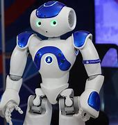

Home

Explore the amazing world of robotics!
Robotics is an interdisciplinary field that focuses on the design,
construction, operation, and use of robots.
It integrates principles frombr
mechanical engineering, electrical engineering, computer science, and artificial intelligence
to create machines that can perform tasks autonomously or semi-autonomously.
The primary goal of robotics is to develop robots
that can replicate human actions and interact with their environment effectively.
Robots are equipped with various components, including sensors
\kto gather information about their surroundings,
actuators to enable movement, control systems to process data and make decisions,
and power supplies to provide energy.
These intelligent machines are used in diverse applications,
such as manufacturing, healthcare, agriculture, exploration, and education, transforming industries and enhancing human capabilities.
Detailed information of robotics
We are a community of robotics enthusiasts who love to build and share knowledge about robotics.
1. **Definition:**
- Robotics is an interdisciplinary field focused on the design, construction, operation, and use of robots.
2. **Core Disciplines:**
- Combines principles from mechanical engineering, electrical engineering, computer science, and artificial intelligence.
3. **Primary Goal:**
- To create machines that can replicate human actions and interact with their environment autonomously or semi-autonomously.
4. **Key Components of Robots:**
- **Sensors:** Gather information about the robot's environment (e.g., cameras, microphones, tactile sensors).
- **Actuators:** Enable movement and physical interaction (e.g., motors, servos, hydraulic systems).
- **Control Systems:** Process data from sensors and make decisions to control the robot's actions.
- **Power Supply:** Provide energy to the robot (e.g., batteries, solar cells, fuel cells).
5. **Types of Robots:**
- **Industrial Robots:** Used in manufacturing and assembly lines for tasks like welding, painting, and material handling.
- **Service Robots:** Assist with domestic tasks, healthcare, and customer service (e.g., vacuum cleaners, surgical robots, receptionists).
- **Exploratory Robots:** Deployed in hazardous environments (e.g., space exploration rovers, underwater drones, disaster response robots).
- **Humanoid Robots:** Designed to resemble and mimic human behavior (e.g., used in research, education, entertainment).
6. **Applications of Robotics:**
- **Manufacturing:** Automation of production lines, improving efficiency, precision, and safety.
- **Healthcare:** Performing delicate surgeries, rehabilitation therapy, and assisting patients with mobility.
- **Agriculture:** Precision farming, crop monitoring, and automated harvesting.
- **Transportation:** Autonomous vehicles, drones for delivery, and traffic management systems.
- **Education:** Enhancing STEM learning, providing hands-on experiences, and promoting creativity.
7. **Future Trends in Robotics:**
- **Collaborative Robots (Cobots):** Working alongside humans to enhance productivity and safety.
- **Soft Robotics:** Using flexible materials and bio-inspired designs for gentle and adaptable interactions.
- **Swarm Robotics:** Coordinated behavior of multiple robots inspired by social insects.
- **Autonomous Navigation:** Improved algorithms for self-driving cars, drones, and delivery robots.
- **Human-Robot Interaction:** Enhancing communication, empathy, and collaboration between humans and robots.
8. **History of Robotics:**
- Dates back to ancient civilizations with mythological creatures and mechanical devices.
- Modern era began in the 20th century with electronic computing and automation.
- The term "robot" was first introduced by Czech writer Karel Čapek in his 1920 play "R.U.R. (Rossum's Universal Robots)."
Projects

Check out some of our exciting robotics projects.
1. **Mobile Robots with Arduino:**
- Build a mobile robot using Arduino.
- Learn about parts, assembly, drivetrains, and programming.
- Implement line-following and obstacle-avoidance features.
2. **8 Leg Spider Robot using RF Control:**
- Create a spider-like robot with eight legs.
- Control it using radio frequency (RF) technology.
3. **Off Road Adventure Robot for Action Camera:**
- Design a robot for off-road adventures.
- Mount an action camera to capture footage.
4. **Solar Panel Cleaner Robot:**
- Develop a robot to clean solar panels.
- Ensure efficient energy production by keeping panels clean.
5. **Wall Climbing Robot:**
- Build a robot capable of climbing walls.
- Use suction or magnetic technology for adhesion.
6. **LIDAR Micro Drone with Proximity Sensing:**
- Create a small drone equipped with LIDAR sensors.
- Implement proximity sensing for obstacle detection.
7. **FlameThrower and Fire Extinguisher Robot:**
- Design a robot with both flame-throwing and fire-extinguishing capabilities.
- Use it for controlled burns and firefighting.
8. **Smart Shopping Trolley that Follows Customer:**
- Build a shopping trolley that follows the customer.
- Use sensors and motors for autonomous movement.
9. **Object Tracker & Follower Robot Using Raspberry Pi:**
- Develop a robot that tracks and follows objects.
- Utilize Raspberry Pi for processing and control.
10. **Rough Terrain Beetle Robot:**
- Create a robot designed for rough terrain.
- Mimic the movement of a beetle for navigation.
11. **Smart Solar Grass Cutter with Lawn Coverage:**
- Design a solar-powered grass-cutting robot.
- Ensure complete lawn coverage with smart navigation.
12. **Path Planner Robot for Indoor Positioning:**
- Build a robot with indoor positioning capabilities.
- Implement path planning algorithms for navigation.
13. **Motorized Solar Scarecrow Bird Animal Repellent:**
- Develop a motorized scarecrow powered by solar energy.
- Use it to repel birds and animals from crops.
14. **DIY 5DOF Wireless Hand Motion Controlled Robotic Gripper Arm:**
- Create a robotic arm with five degrees of freedom (DOF).
- Control it wirelessly using hand motions.
15. **Design and Fabrication of Emergency Braking System in Four-Wheeler:**
- Implement an emergency braking system for four-wheelers.
- Enhance vehicle safety with automated braking.
16. **Arduino Based Snake Robot Controlled using Android Application:**
- Build a snake-like robot controlled via an Android app.
- Use Arduino for processing and control.
17. **Variable Head Solar Grass Cutter Weed Trimmer:**
- Design a solar-powered grass cutter with a variable head.
- Use it for trimming weeds and maintaining lawns.
18. **Fire Fighter Robot with Night Vision Camera:**
- Develop a firefighting robot equipped with a night vision camera.
- Use it for firefighting in low-visibility conditions.
19. **RF Controlled Solar Panel Based Robotic Vehicle:**
- Create a robotic vehicle powered by solar panels.
- Control it using radio frequency (RF) technology.
20. **LIDAR Based Object Detection for Military Spying:**
- Build a robot with LIDAR-based object detection.
- Use it for military spying and reconnaissance.
Here are the various applications of robotics
Robotics has a wide range of applications across various industries and fields. Here are some notable applications:
1. **Manufacturing:**
- Automation of production lines.
- Tasks like welding, painting, assembly, and material handling.
- Enhances efficiency, precision, and safety.
2. **Healthcare:**
- Surgical robots for minimally invasive surgeries.
- Rehabilitation robots for physical therapy.
- Assistive robots for elderly and disabled individuals.
3. **Agriculture:**
- Precision farming for efficient crop management.
- Automated harvesting and planting.
- Monitoring and maintenance of crops and livestock.
4. **Transportation:**
- Autonomous vehicles for self-driving cars.
- Drones for delivery and aerial surveying.
- Traffic management systems.
5. **Exploration:**
- Space exploration robots for planetary exploration.
- Underwater robots for marine research and monitoring.
- Disaster response robots for search and rescue operations.
6. **Service Industry:**
- Robots for customer service and hospitality.
- Cleaning robots for domestic and commercial use.
- Security robots for surveillance and patrolling.
7. **Entertainment and Education:**
- Robots in theme parks and entertainment venues.
- Educational robots for STEM learning and hands-on experiences.
- Research robots for studying robotics and AI.
8. **Construction:**
- Robots for building and construction tasks.
- Automated bricklaying and 3D printing of structures.
- Inspection and maintenance of infrastructure.
9. **Military and Defense:**
- Unmanned aerial vehicles (UAVs) for reconnaissance and combat.
- Bomb disposal robots for handling explosives.
- Surveillance and security robots.
10. **Retail:**
- Inventory management and restocking robots.
- Automated checkout systems.
- Personal shopping assistants.
These applications highlight the versatility and impact of robotics in improving efficiency, safety, and innovation across various domains.